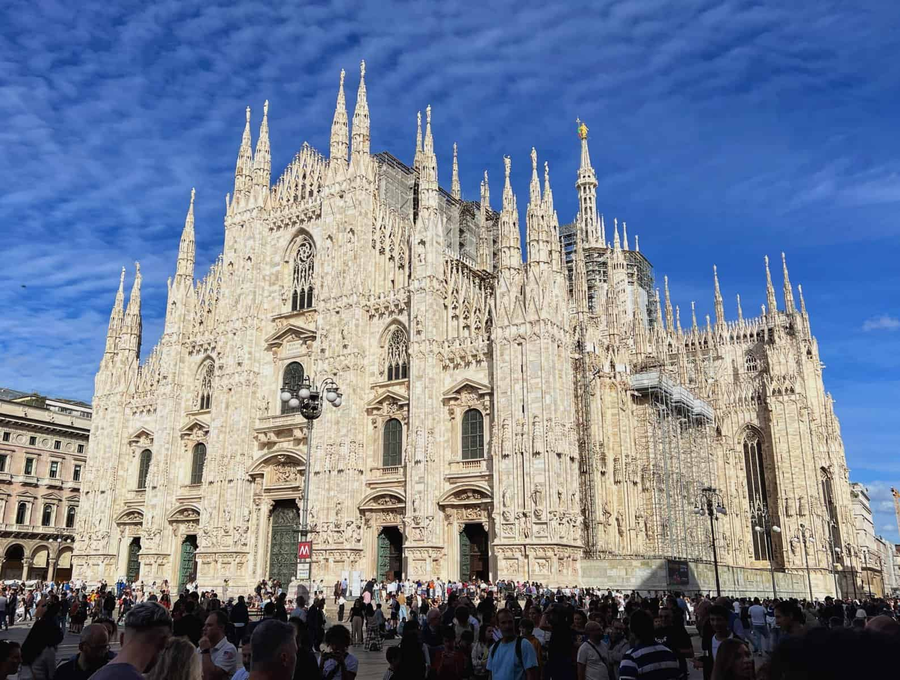
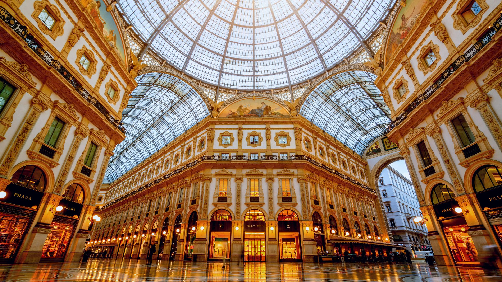
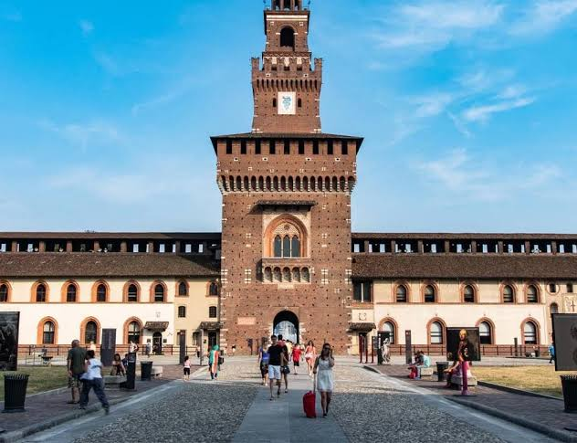
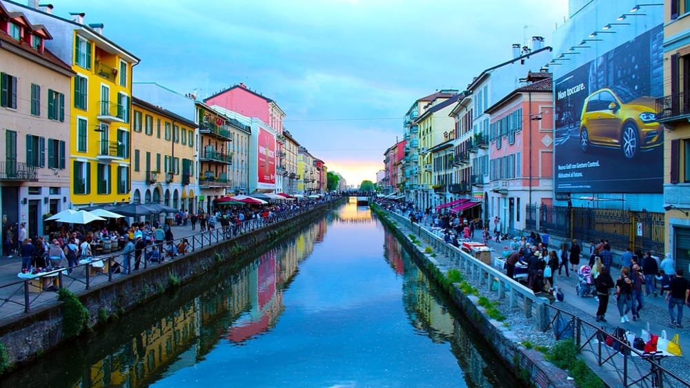
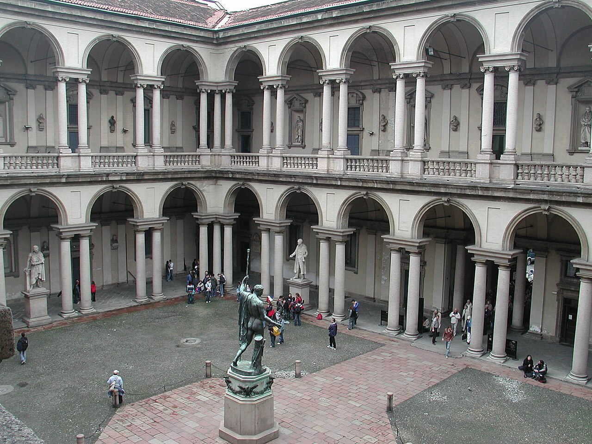
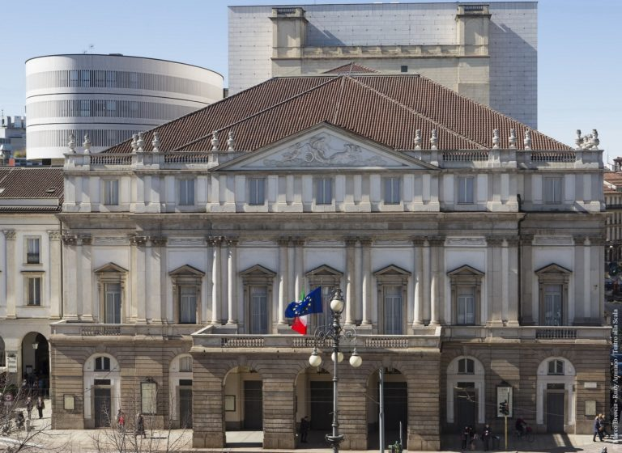
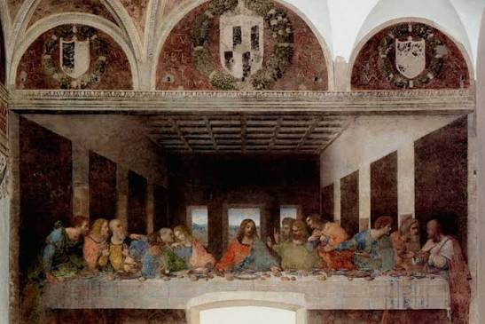
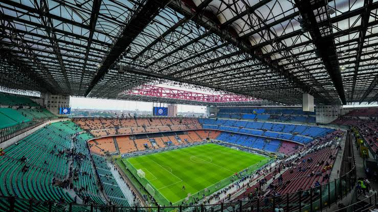
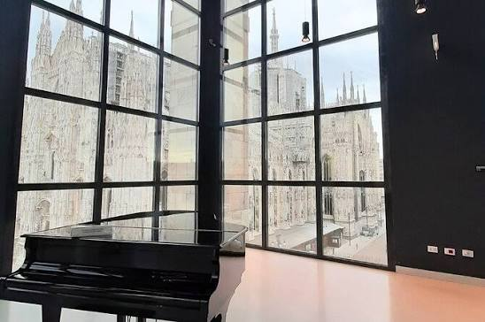
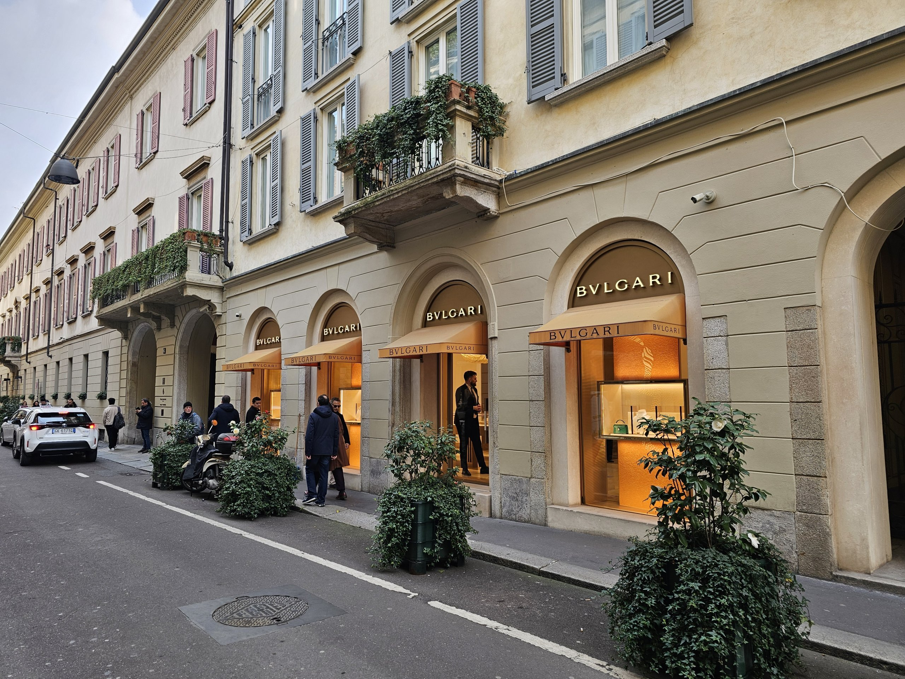

Descubra os ícones da cidade: Duomo, Galleria Vittorio Emanuele, Castello Sforzesco, Navigli, Brera, Teatro alla Scala, Última Ceia, San Siro, Museo del Novecento e o Quadrilátero da Moda.
🏛 Duomo di Milano

A construção da Catedral de Milão começou em 1386 e levou quase seis séculos para ser concluída. É um dos maiores templos góticos do mundo, com mais de 3.000 estátuas e 135 agulhas.
O interior guarda vitrais coloridos e o famoso cravo sagrado. Subir aos terraços é uma experiência única, com vista da cidade e dos Alpes.
Ingressos: Interior + museu €8; terraços €16–23.
Horários: Diariamente, 8h às 19h.
Dica: Compre ingresso antecipado.
🛍 Galleria Vittorio Emanuele II

Inaugurada em 1877, é considerada o “salão de Milão”. Projetada por Giuseppe Mengoni, combina ferro e vidro em uma arquitetura inovadora.
Os mosaicos no chão representam cidades italianas. Girar o calcanhar sobre o touro de Turim é tradição para atrair sorte.
Entrada: Gratuita.
Dica: Passeio obrigatório entre o Duomo e a Scala.
🏰 Castello Sforzesco

Construído no século XV por Francesco Sforza, o castelo foi residência da poderosa família que governava Milão.
Hoje abriga museus e coleções de arte, incluindo a última escultura de Michelangelo. Atrás dele está o Parco Sempione.
Ingressos: €5; gratuito em algumas tardes de terça-feira.
Dica: Combine com passeio no Parco Sempione.
🌊 Navigli

Os canais foram projetados com ideias de Leonardo da Vinci e foram vitais para o comércio.
Hoje são um polo animado de bares e restaurantes, especialmente à noite.
Entrada: Gratuita.
Dica: Ótimo para jantar ao ar livre.
🎨 Brera

Bairro boêmio e artístico, famoso pela Pinacoteca di Brera com obras de Caravaggio e Rafael.
Suas ruas charmosas são repletas de cafés e galerias independentes.
Ingressos Pinacoteca: €15; gratuito no primeiro domingo do mês.
Dica: Passeio noturno encantador.
🎶 Teatro alla Scala

Inaugurado em 1778, é um dos templos da ópera mundial, palco de estreias de Verdi e Puccini.
O museu exibe figurinos e documentos históricos. Assistir a uma ópera é uma experiência única.
Ingressos: Museu €12; espetáculos variam.
Dica: Reserve com antecedência.
🎨 Última Ceia (Cenacolo Vinciano)

Pintada por Leonardo da Vinci entre 1495 e 1498, é uma das obras mais famosas da arte.
Localizada no convento de Santa Maria delle Grazie, a visita é controlada e limitada.
Ingressos: Cerca de €15; reservas obrigatórias.
Dica: Planeje com semanas de antecedência.
🏟 Estádio San Siro

Construído em 1926, é casa do Milan e da Inter, com capacidade para mais de 75 mil pessoas.
O museu conta a história dos clubes e do futebol italiano.
Ingressos: Visitas guiadas a partir de €20.
Dica: Combine com um jogo.
🖼 Museo del Novecento

Localizado na Piazza del Duomo, reúne arte do século XX com obras de Modigliani e Picasso.
O edifício oferece vista privilegiada da catedral.
Ingressos: Cerca de €10; gratuito em alguns domingos.
Dica: Combine com Duomo e Galleria.
👗 Quadrilátero da Moda

Formado pelas ruas Montenapoleone, della Spiga, Sant’Andrea e Manzoni, é o coração fashion de Milão.
Passear por ali é como visitar um museu a céu aberto da moda contemporânea.